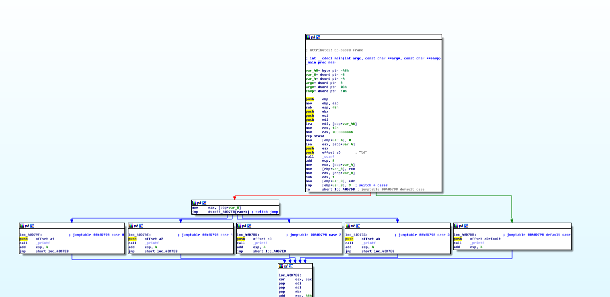

前面讲解了if…else…的分支结构，接下来介绍switch…case…default的分支结构。switch分支结构是一种比较灵活的结构，它的反汇编代码可以生成多种形式，这里只介绍它的其中一种形式。
1.switch分支结构例子程序
先写例子代码，再对例子代码进行介绍。例子代码如下：1
2
3
4
5
6
7
8
9
10
11
12
13
14
15
16
17
18
19
20
21
22
23
24
25
26
27
28
29
30
31
32
33
34
35
36
37
int main()
{
int nNum = 0;
scanf("%d",&nNum);
switch (nNum)
{
case 1:
{
printf("1 \r\n");
break;
}
case 2:
{
printf("2 \r\n");
break;
}
case 3:
{
printf("3 \r\n");
break;
}
case 4:
{
printf("4 \r\n");
break;
}
default:
{
printf("default \r\n");
break;
}
}
return 0;
}
2.逆向反汇编解析
反汇编代码分两部分来看，一部分是default分支，另一部分是case分支。先看IDA生成的流程结构图，如下图所示：

在上图中可以看到2个大的分支，在左边的分支中又有4个小的分支。在整体结构上来看，不同于C语言的代码形式。其实右边的部分是case部分，右边的部分是default部分。
1 | ;var_4相当于nNum |
scanf()函数是C语言标准输入函数，第1个参数为格式化字符串，第2个参数是接收数据的地址。在0040D76F地址处，代码lea eax, [ebp+var_4]将nNum变量的地址送入eax寄存器。经过scanf()函数调用，var_4（相当于nNum）接收了用户的输入。
通过scanf()函数接收到用户的输入后，就进入switch()分支的部分，至少在C语言代码中是这样的。下面看一下反汇编代码得到情况：1
2
3
4
5
6
7
8
9.text:0040D780 mov ecx, [ebp+var_4]
.text:0040D783 mov [ebp+var_8], ecx
.text:0040D786 mov edx, [ebp+var_8]
.text:0040D789 sub edx, 1
.text:0040D78C mov [ebp+var_8], edx
.text:0040D78F cmp [ebp+var_8], 3 ; switch 4 cases
.text:0040D793 ja short loc_40D7DB ; jumptable 0040D798 default case
.text:0040D795 mov eax, [ebp+var_8]
.text:0040D798 jmp ds:off_40D7FB[eax*4] ; switch jump
0040D780地址处的代码是mov ecx, [ebp+var_4]，也就是把nNum的值赋给了ecx寄存器。接着0040D783地址处的代码是mov [ebp+var_8], ecx，这句将ecx的值又赋给了var_8这个变量。但是，在C语言代码中只定义了一个变量，而var_8是怎么来的？var_8是编译器产生的一个临时变量，用来保存一些数据。接着在0040D786地址处的代码又将var_8的值赋给了edx寄存器。然后0040D789和0040D78C地址处的代码将edx的值减1后又赋给了var_8变量。
这部分反汇编代码在C语言中是没有对应关系的。但是这部分代码的用处是什么呢？接着往下看0040D78F地址处是一条cmp [ebp+var_8], 3反汇编代码。比较后，如果var_8大于3的话，那么0040D793地址处的无符号条件跳转指令ja将会进行跳转，去执行default部分的代码。0040D78F地址处为什么会和3进行比较呢？case分支的范围是1~4，而var_8在和3比较之前进行了减1的操作。如果var_8的值的范围在1~4之间，减1后的范围就变成了0~3之间。如果var_8的值小于等于3，则说明switch要执行case中的部分；如果是其他值的话，则要执行default流程。上面流程图被分为两部分就是这里的比较所引起的。
注：为什么判断时只判断是否大于3呢？小于等于3不一定意味着0~3的范围吧？也可能存在负数的情况。这样的质疑是对的，但是在条件分支处使用的条件跳转指令是“ja”，它是一个无符号的条件跳转指令，即使存在负数也会被当正数进行解析。
通过上面的分析可以发现，switch分支对于定位是执行case分支还是default分支的方法很高效。如果是执行default分支，那么只需要比较一次即可直接执行。
C语言中，switch语句有4个case部分，是不是应该比较4次呢？由于C语言代码中的case项是一个连续的序列，因此编译器又对代码做了优化。0040D795和0040D798地址处的两句代码即可准确找到要执行的case分支。再来看一下这两个地址处的反汇编代码，如下：1
2.text:0040D795 mov eax, [ebp+var_8]
.text:0040D798 jmp ds:off_40D7FB[eax*4] ; switch jump
0040D795地址处的代码将var_8的值传递给了eax寄存器，由于前面的代码没有发生跳转，那么var_8的取值范围必定在0~3之间。0040D798地址处的跳转很奇怪，像一个数组（其实就是一个数组），数组的下表由eax寄存器进行寻址。